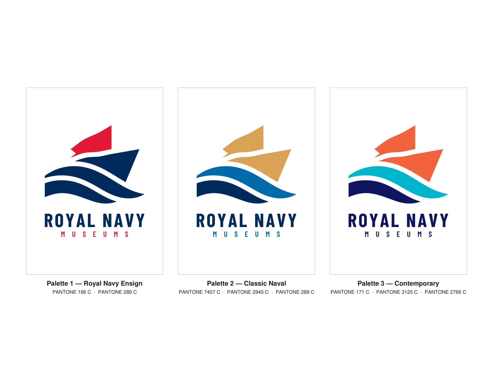
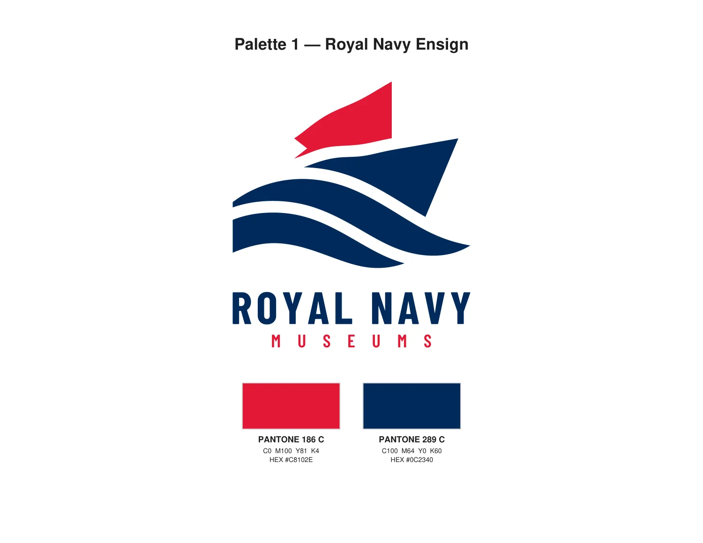
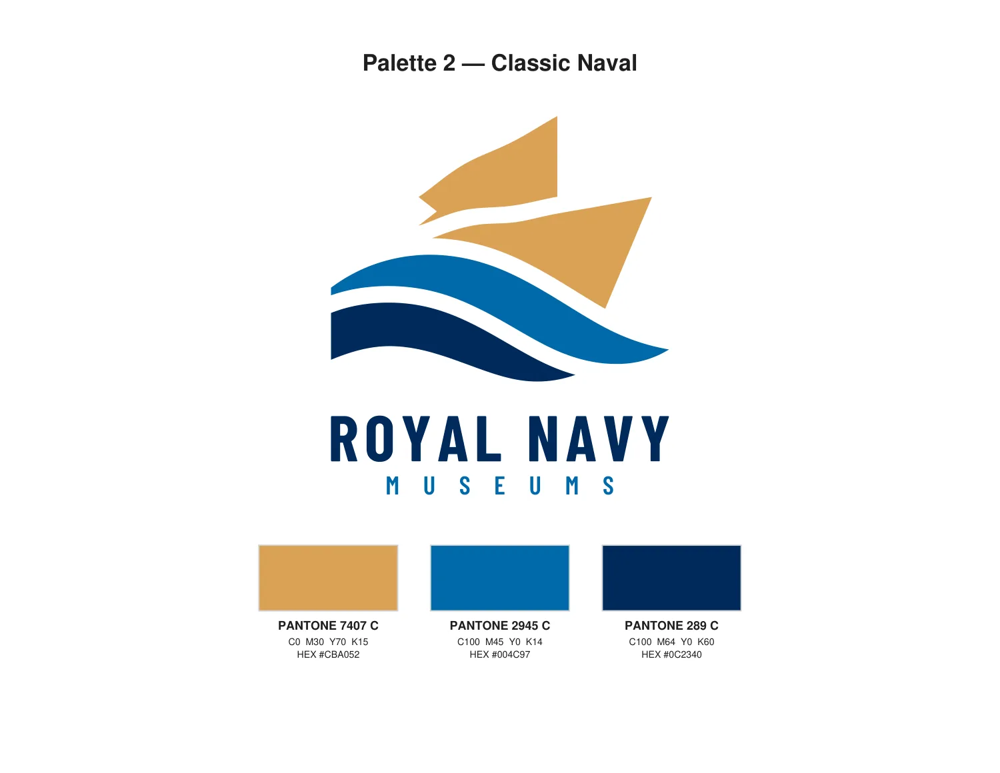
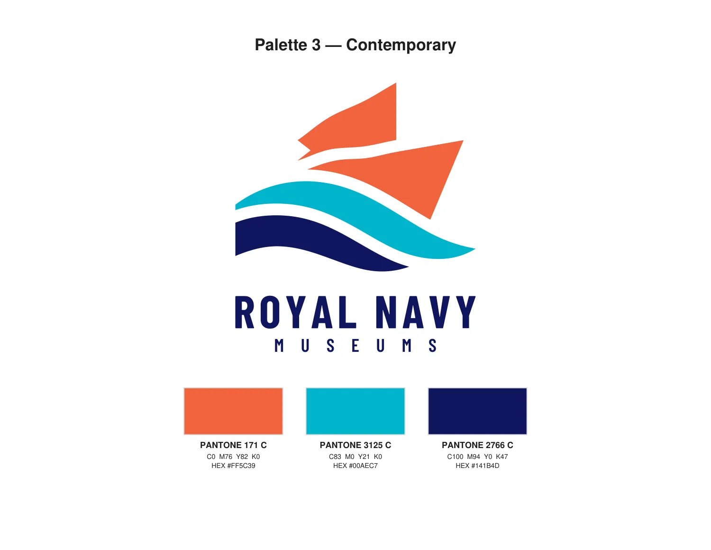
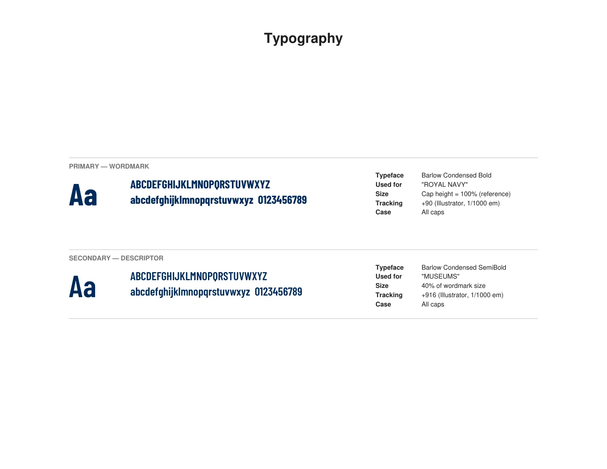
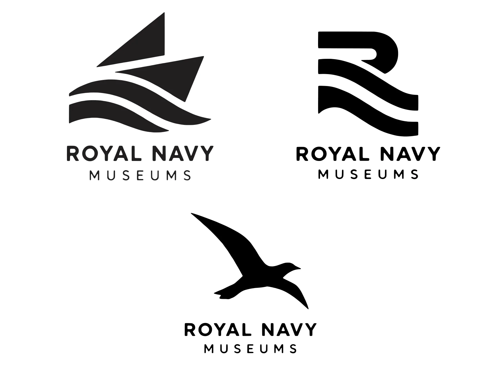

Branding
Royal Navy Museums Rebrand
A logo redesign concept for Royal Navy Museums in three colour directions.

- Year
- 2026
- Course
- Branding Design (GRA412)
- Tools
- Illustrator
- Type
- Branding
A sail rising over layered waves forms the mark, with a monogram and a seabird as alternates. Three palettes (Royal Navy Ensign, Classic Naval and Contemporary) and a condensed sans-serif system show how the identity can lean traditional or modern.
Academic concept. Not affiliated with Royal Navy Museums.




